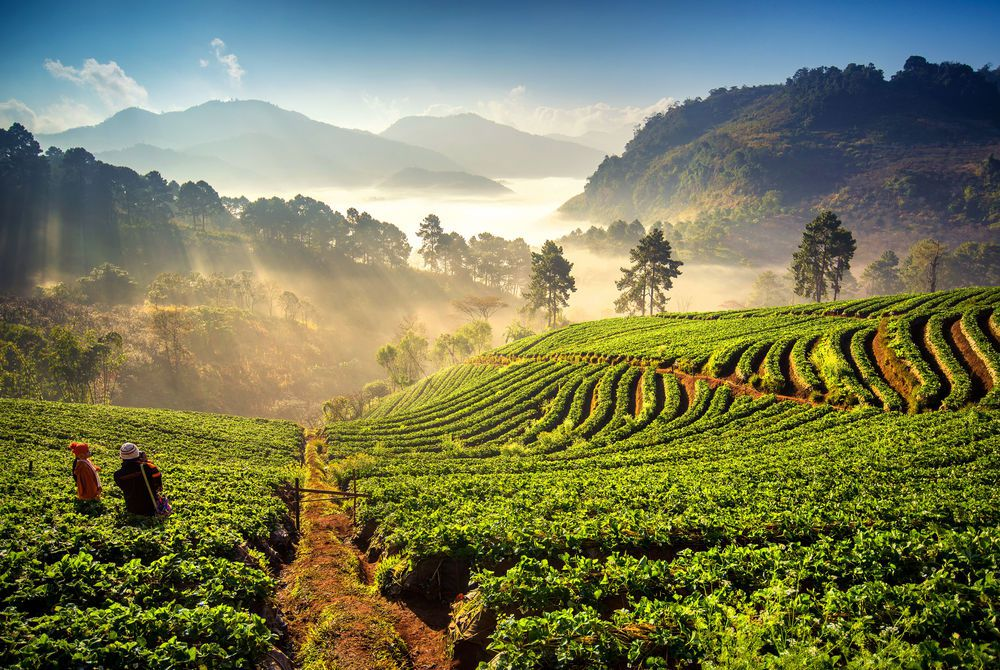
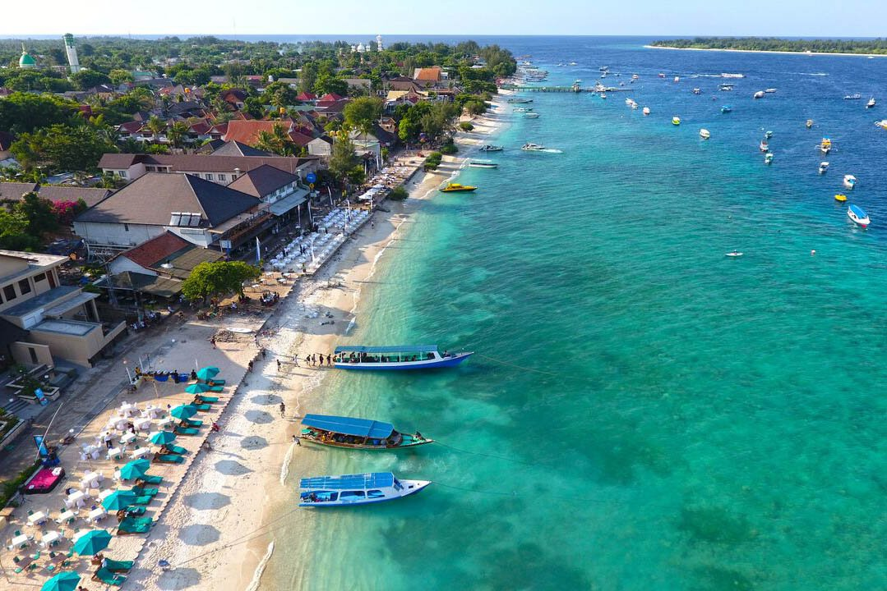
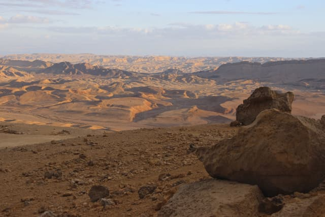

Lorene Valency
Future CEO of something amazing
Originally from Paris, I started a new life in Tel Aviv in 2017 and decided to give a new start to my carreer as well. After building a few websites through WordPress or PrestaShop, I got frustrated that I couldn't do exactly what I wanted and that I was so limited in the possibilities. So here I am, at Le Wagon Tel Aviv, trying to become a programmer and build unique, amazing websites!
In case you need customed furnitureThe best places I visited
|  | Chiang Mai - ThailandChiang Mai is the largest city in northern Thailand. It is the capital of Chiang Mai Province and was a former capital of the kingdom of Lan Na (1296–1768), which later became the Kingdom of Chiang Mai, a tributary state of Siam from 1774 to 1899, and finally the seat of a princely rulers until 1939. It is 700 km (435 mi) north of Bangkok near the highest mountains in the country. The city sits astride the Ping River, a major tributary of the Chao Phraya River. |
|  | Gili Trawangan - IndonesiaWhite sandy beaches. Tropical coral reefs. Warm inviting waters. All this awaits you on the Gili Trawangan and the Gili islands in Lombok. And with no cars, no motorbikes and no distractions other than beautiful tropical island scenery, the Gili islands off the northwest coast of Lombok are truly an ideal destination for a tropical getaway. |
 |
Horseshoe Bend - United States, ArizonaThis bend in the Colorado River is getting plenty of attention from those looking for the Grand Canyon. It is located approximately 140 miles from both the South Rim and the North Rim of the Grand Canyon – but only 5 miles from the beginning of Grand Canyon National Park. You can experience Horseshoe Bend when traveling from Rim to Rim via Highway 89/89A by simply taking a short 18 mile up to Page, Arizona. |
|  | Mitzpe Ramon- IsraelIn Hebrew, the word mitzpe means ‘lookout’, and Mitzpe Ramon, spectacularly sited on the northern edge of Israel's 'grand canyon', well and truly lives up to its name. Views are of the take-your-breath-away variety and help draw artists and visionary people looking for a less pressured and more creative lifestyle. As a result, the town – especially the Spice Route Quarter – positively pulses with innovative energy. |